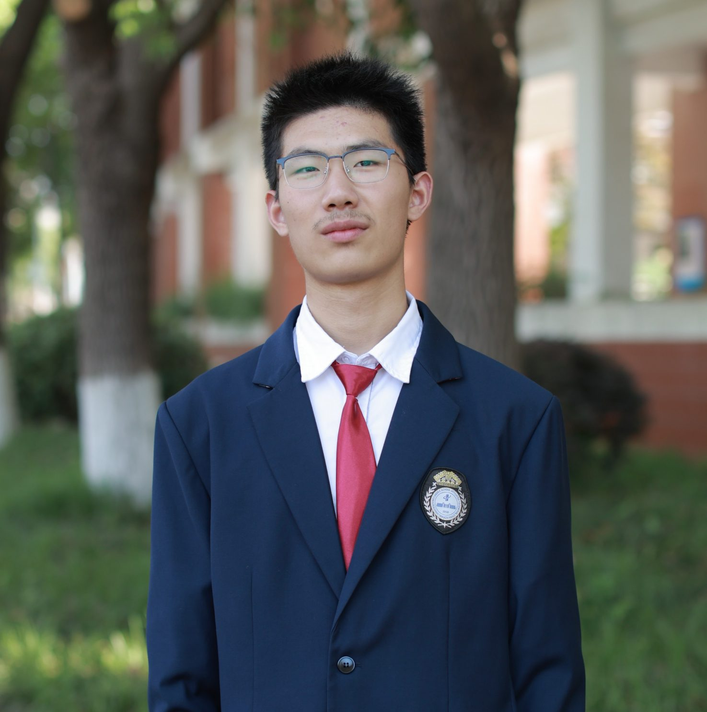

> let's begin
欢迎使用个人档案系统！
正在加载陶晨博的角色数据...
[加载完成]
正在加载陶晨博的角色数据...
[加载完成]
> about myself

陶晨博
等级: Lv.1 (大一新生)
专业: 计算机科学与技术
所属阵营: 华中科技大学
专业: 计算机科学与技术
所属阵营: 华中科技大学
> statistics
身高
185cm / 高富帅至少先占到了高
体重
70kg / 别说哥们弱不禁风，哥们这是身材保持的好
体育能力
体测80+ / 就说别觉得哥们弱不禁风
编程能力
我会打Hello World / 但是我可以练不是吗
> skills
掌握技能:
会吃会生活 不完全掌握篮球 不完全掌握吉他 掌握急救
学习中技能:
那可太多了 上大学才发现啥技能都要学习
会吃会生活 不完全掌握篮球 不完全掌握吉他 掌握急救
学习中技能:
那可太多了 上大学才发现啥技能都要学习
> more details
河南驻马店人，在武汉长大，南北合资。
计算机萌新，虽然菜，但愿意探索。
大多数时候比较乐观粗线条，但偶尔也会很文艺深沉。
希望有一天，我们学到的知识可以真正给世界带来改变。
计算机萌新，虽然菜，但愿意探索。
大多数时候比较乐观粗线条，但偶尔也会很文艺深沉。
希望有一天，我们学到的知识可以真正给世界带来改变。
> secrets
📄 陶晨博的绝密档案 [等级：S]
都叫绝密档案了怎么可以随便让你们知道
都叫绝密档案了怎么可以随便让你们知道
> exit
感谢使用陶晨博的个人档案系统！